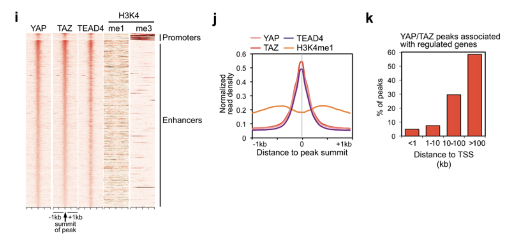
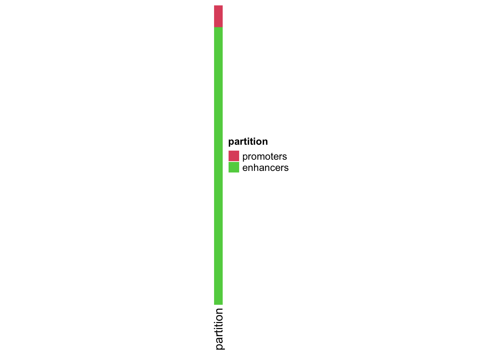
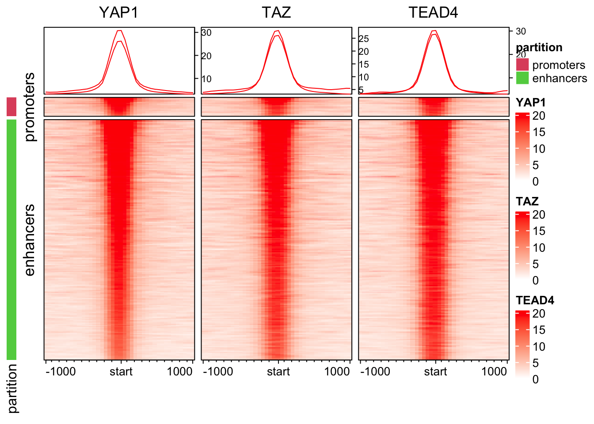
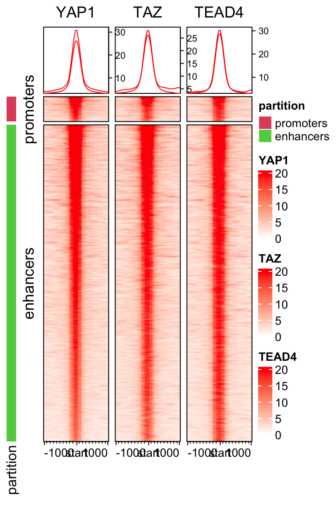
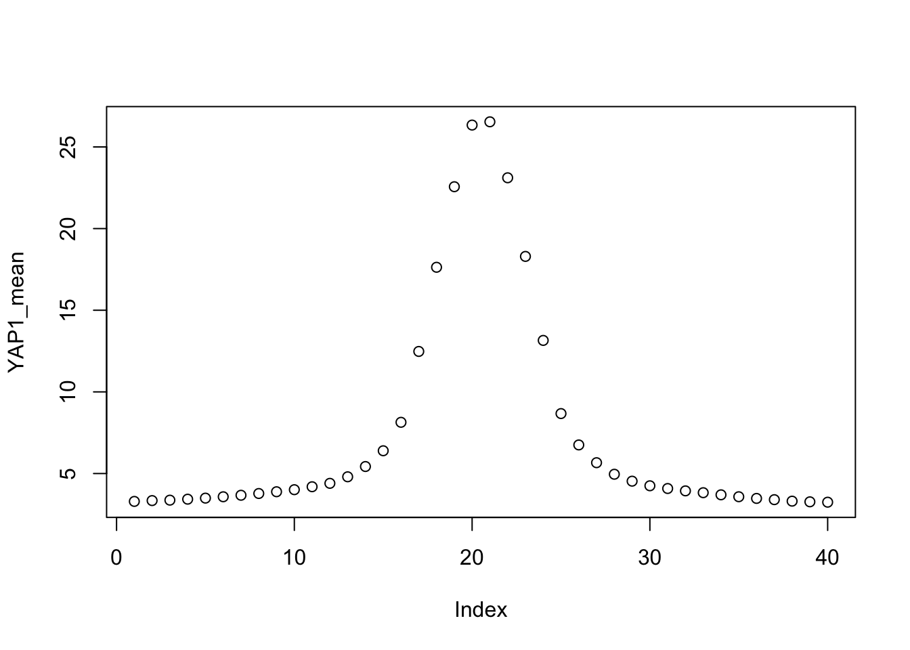
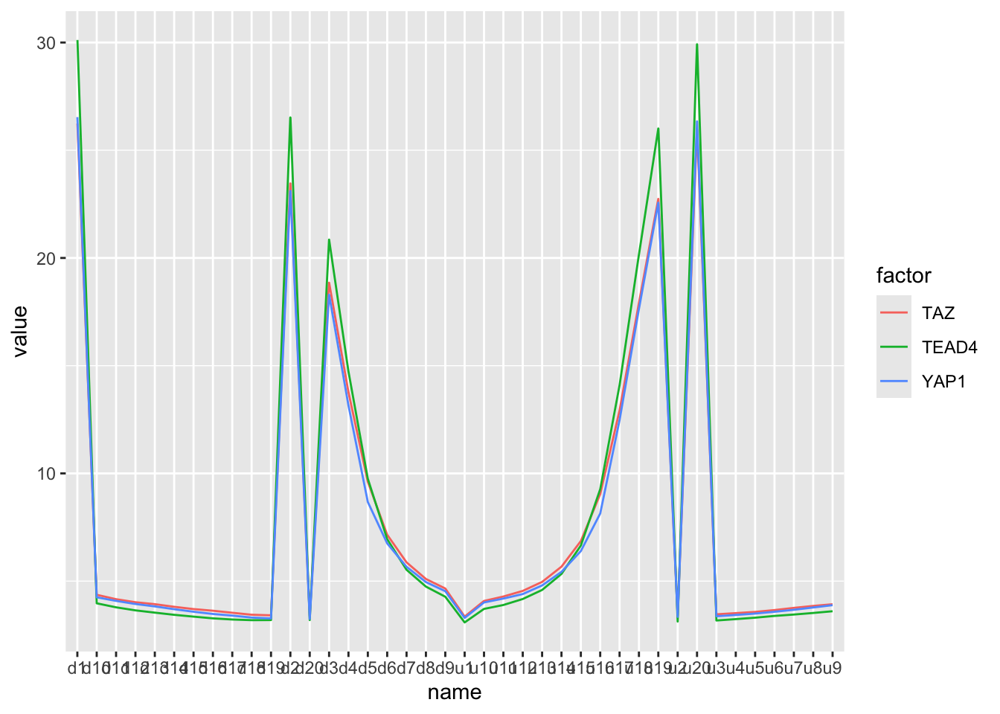
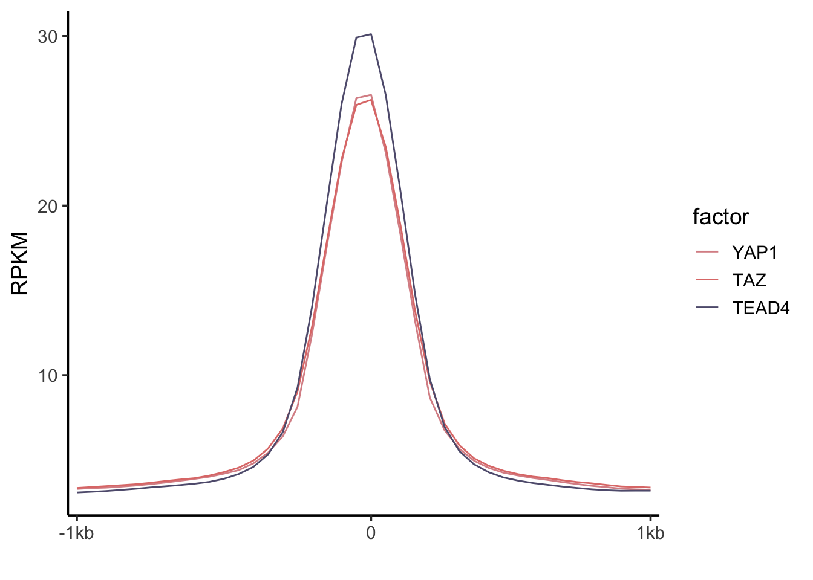

Last updated: 2024-12-31
Checks: 6 1
Knit directory:
reproduce_genomics_paper_figures/
This reproducible R Markdown analysis was created with workflowr (version 1.7.1). The Checks tab describes the reproducibility checks that were applied when the results were created. The Past versions tab lists the development history.
The R Markdown is untracked by Git. To know which version of the R
Markdown file created these results, you’ll want to first commit it to
the Git repo. If you’re still working on the analysis, you can ignore
this warning. When you’re finished, you can run
wflow_publish to commit the R Markdown file and build the
HTML.
Great job! The global environment was empty. Objects defined in the global environment can affect the analysis in your R Markdown file in unknown ways. For reproduciblity it’s best to always run the code in an empty environment.
The command set.seed(20241226) was run prior to running
the code in the R Markdown file. Setting a seed ensures that any results
that rely on randomness, e.g. subsampling or permutations, are
reproducible.
Great job! Recording the operating system, R version, and package versions is critical for reproducibility.
Nice! There were no cached chunks for this analysis, so you can be confident that you successfully produced the results during this run.
Great job! Using relative paths to the files within your workflowr project makes it easier to run your code on other machines.
Great! You are using Git for version control. Tracking code development and connecting the code version to the results is critical for reproducibility.
The results in this page were generated with repository version d2e0e8a. See the Past versions tab to see a history of the changes made to the R Markdown and HTML files.
Note that you need to be careful to ensure that all relevant files for
the analysis have been committed to Git prior to generating the results
(you can use wflow_publish or
wflow_git_commit). workflowr only checks the R Markdown
file, but you know if there are other scripts or data files that it
depends on. Below is the status of the Git repository when the results
were generated:
Ignored files:
Ignored: .DS_Store
Ignored: .Rproj.user/
Ignored: analysis/.DS_Store
Ignored: data/fastq/
Ignored: data/public_data/
Ignored: data/reference/
Untracked files:
Untracked: analysis/04_figure1_a_b_c.Rmd
Untracked: analysis/05_figure1_d_f.Rmd
Untracked: analysis/06_figure1_g_h.Rmd
Untracked: analysis/07_figure1_i_j_k.Rmd
Untracked: analysis/08_homework.Rmd
Unstaged changes:
Modified: .gitignore
Modified: README.md
Modified: analysis/01_download_fastq_from_GEO.Rmd
Modified: analysis/02_align_to_hg38.Rmd
Modified: analysis/03_generate_bigwig.Rmd
Modified: analysis/index.Rmd
Modified: reproduce_genomics_paper_figures.Rproj
Note that any generated files, e.g. HTML, png, CSS, etc., are not included in this status report because it is ok for generated content to have uncommitted changes.
There are no past versions. Publish this analysis with
wflow_publish() to start tracking its development.
Let’s recreate Figure 1 i,j,k!

From the figure description:
- Heatmap representing YAP/TAZ/TEAD binding sites located on promoters (top) and enhancers (bottom). YAP, TAZ and TEAD4 peaks are ranked from the strongest to weakest signal in TAZ ChIP, in a window of ±1kb centered on the summit of TAZ peaks. H3K4me1 and H3K4me3 signal in the corresponding genomic regions is shown on the right.
From the method section:
Heatmaps were generated using a custom R script which considers a 2-kb window centered on peak summits and calculates the normalized reads density with a resolution of 50 bp.
Figure 1i is a heatmap! A heatmap is of no mystery. We use colors to represent values in a matrix and then plot the matrix as a heatmap.
Read this detailed tutorial from me.
We know the underlying data is a matrix. What are the rows and
columns for this matrix? The rows are different peaks. The columns are
2kb window centered on the summit of the TAZ peaks with 50 bp per bin.
So it will be 2000/50 = 40 bins for the columns.
The signal is the normalized read counts in each bin. We
can do it from scratch with bedtools multicov to get the
counts per bin for each YAP1/TAZ/TEAD4 peak like we did for the scatter
plot in Figure 1d. Then, re-arrange it to a matrix and plot.
Usually, there is always some packages that can be used to do the task.
Here is a list of the tools can be used.
I am going to use EnrichedHeatmap
which is built upon the awesome ComplexHeatmap.
library(rtracklayer) # for reading in bed file
library(here)
library(dplyr)
library(ggplot2)
TAZ_peaks<- import(here("data/fastq/TAZ_peak/TAZ_peaks.narrowPeak"))
YAP_peaks<- import(here("data/fastq/YAP_peak/YAP_peaks.narrowPeak"))
TEAD4_peak<- import(here("data/fastq/TEAD4_peak/TEAD4_peaks.narrowPeak"))
YAP_overlap_TAZ_peaks<- subsetByOverlaps(YAP_peaks, TAZ_peaks)
YAP_overlap_TAZ_peaks_overlap_TEAD4<- subsetByOverlaps(YAP_overlap_TAZ_peaks, TEAD4_peak)
YAP_overlap_TAZ_peaks_overlap_TEAD4#> GRanges object with 5965 ranges and 6 metadata columns:
#> seqnames ranges strand | name score
#> <Rle> <IRanges> <Rle> | <character> <numeric>
#> [1] chr1 1024628-1025059 * | YAP_peak_3 494
#> [2] chr1 1264837-1265155 * | YAP_peak_4 148
#> [3] chr1 1265320-1265695 * | YAP_peak_5 131
#> [4] chr1 1360618-1360955 * | YAP_peak_6 306
#> [5] chr1 1659298-1659586 * | YAP_peak_8 45
#> ... ... ... ... . ... ...
#> [5961] chrX 154368850-154369243 * | YAP_peak_9801 90
#> [5962] chrX 154596614-154596846 * | YAP_peak_9802 120
#> [5963] chrX 154600351-154600918 * | YAP_peak_9803 131
#> [5964] chrX 154732680-154732891 * | YAP_peak_9804 58
#> [5965] chrX 155888248-155888487 * | YAP_peak_9806 108
#> signalValue pValue qValue peak
#> <numeric> <numeric> <numeric> <integer>
#> [1] 16.37320 54.3883 49.46070 192
#> [2] 8.81841 18.8472 14.89750 188
#> [3] 8.62413 17.0083 13.14010 112
#> [4] 14.37360 35.1297 30.64260 148
#> [5] 5.06808 7.8940 4.58709 102
#> ... ... ... ... ...
#> [5961] 6.13997 12.64820 9.00333 237
#> [5962] 8.21346 15.84150 12.02720 128
#> [5963] 8.62413 17.00830 13.14010 417
#> [5964] 5.74942 9.32421 5.89513 78
#> [5965] 6.72473 14.58900 10.84320 151
#> -------
#> seqinfo: 27 sequences from an unspecified genome; no seqlengthsSince we focused on YAP1, I will use the summit of YAP1
as the anchor point. We can of course change it to TAZ
too.
YAP_summit<- import(here("data/fastq/YAP_peak/YAP_summits.bed"))
YAP_summit#> GRanges object with 9807 ranges and 2 metadata columns:
#> seqnames ranges strand | name score
#> <Rle> <IRanges> <Rle> | <character> <numeric>
#> [1] chr1 10053 * | YAP_peak_1 8.16671
#> [2] chr1 180782 * | YAP_peak_2 4.48630
#> [3] chr1 1024820 * | YAP_peak_3 49.46070
#> [4] chr1 1265025 * | YAP_peak_4 14.89750
#> [5] chr1 1265432 * | YAP_peak_5 13.14010
#> ... ... ... ... . ... ...
#> [9803] chrX 154600768 * | YAP_peak_9803 13.14010
#> [9804] chrX 154732758 * | YAP_peak_9804 5.89513
#> [9805] chrX 154797203 * | YAP_peak_9805 4.92389
#> [9806] chrX 155888399 * | YAP_peak_9806 10.84320
#> [9807] chrX 156030553 * | YAP_peak_9807 37.07200
#> -------
#> seqinfo: 27 sequences from an unspecified genome; no seqlengthssubset it to only the common peaks of YAP1/TAZ/TEAD4:
read in the histone modification peaks:
H3K4me1<- import(here("data/public_data/H3K4me1.bed"))
H3K4me3<- import(here("data/public_data/H3K4me3.bed"))
H3K27ac<- import(here("data/public_data/H3K27ac.bed"))Define enhancers and promoters:
enhancers<- subsetByOverlaps(H3K4me1, H3K4me3, invert=TRUE)
promoters<- subsetByOverlaps(H3K4me3, H3K4me1, invert=TRUE)annotate the YAP1/TAZ/TEAD4 peaks:
YAP1_enhancers<- subsetByOverlaps(YAP_overlap_TAZ_peaks_overlap_TEAD4, enhancers)
YAP1_promoters<- subsetByOverlaps(YAP_overlap_TAZ_peaks_overlap_TEAD4, promoters) YAP1_enhancers$name %>% head()#> [1] "YAP_peak_4" "YAP_peak_5" "YAP_peak_14" "YAP_peak_17" "YAP_peak_18"
#> [6] "YAP_peak_19"YAP_summit_enhancer<- YAP_summit[YAP_summit$name %in% YAP1_enhancers$name]
YAP_summit_promoter<- YAP_summit[YAP_summit$name %in% YAP1_promoters$name]
# combine them
anchors<- c(YAP_summit_promoter, YAP_summit_enhancer) We need to import the bigwig files we generated in here
YAP1_bw<- import(here("data/fastq/YAP.bw"))
TAZ_bw<- import(here("data/fastq/TAZ.bw"))
TEAD4_bw<- import(here("data/fastq/TEAD4.bw"))
# it is a GRanges object
YAP1_bw#> GRanges object with 25709200 ranges and 1 metadata column:
#> seqnames ranges strand | score
#> <Rle> <IRanges> <Rle> | <numeric>
#> [1] chr1 1-9850 * | 0.0000
#> [2] chr1 9851-9900 * | 44.8128
#> [3] chr1 9901-9950 * | 58.3412
#> [4] chr1 9951-10000 * | 67.6419
#> [5] chr1 10001-10050 * | 108.2270
#> ... ... ... ... . ...
#> [25709196] chrUn_GL000218v1 160801-160950 * | 5.91867
#> [25709197] chrUn_GL000218v1 160951-161000 * | 4.22762
#> [25709198] chrUn_GL000218v1 161001-161050 * | 5.91867
#> [25709199] chrUn_GL000218v1 161051-161147 * | 3.38210
#> [25709200] chrEBV 1-171823 * | 0.00000
#> -------
#> seqinfo: 195 sequences from an unspecified genomeNow, quantify the the signal in the bins
# BiocManager::install("EnrichedHeatmap")
library(EnrichedHeatmap)
# extend 1000 bp on each side and use 50bp bin
mat1<- normalizeToMatrix(YAP1_bw, anchors, value_column = "score",
extend= 1000, mean_mode = "w0", w=50)
mat2<- normalizeToMatrix(TAZ_bw, anchors, value_column = "score",
extend= 1000, mean_mode = "w0", w=50)
mat3<- normalizeToMatrix(TEAD4_bw, anchors, value_column = "score",
extend= 1000, mean_mode = "w0", w=50)The matrix should be length(achors) = 3762 rows by
2000/50 = 40 columns. Let’s verify it:
dim(mat1)#> [1] 3762 40dim(mat2)#> [1] 3762 40dim(mat3)#> [1] 3762 40mat1[1:5, 1:40 ]#> u1 u2 u3 u4 u5 u6 u7 u8
#> [1,] 2.536570 2.536570 2.5365701 1.707960 1.69105 2.5196597 2.536570 3.365190
#> [2,] 0.845524 0.845524 0.3720306 0.000000 0.00000 0.4734934 1.792510 2.536570
#> [3,] 3.077709 3.382100 3.9232329 5.851025 6.76419 5.1407854 4.227620 3.686487
#> [4,] 2.874780 4.565830 5.5804602 4.227620 4.22762 4.0585161 3.043890 1.521945
#> [5,] 4.227620 4.227620 4.5658321 4.396730 3.38210 3.0438881 2.874782 3.043888
#> u9 u10 u11 u12 u13 u14 u15 u16
#> [1,] 3.382100 5.039329 4.2445307 3.3990105 5.039329 4.244531 3.399011 4.210710
#> [2,] 3.010067 4.329088 4.5996533 3.7541289 3.382100 3.382100 2.908603 3.483558
#> [3,] 1.758691 0.845524 0.3043886 0.5411354 0.845524 1.927793 3.077709 4.464372
#> [4,] 1.183733 2.536570 2.7056761 3.7203101 5.073150 4.904044 4.396726 5.242254
#> [5,] 2.874782 3.043888 3.2129901 3.8894121 4.058520 4.396730 3.720308 4.565832
#> u17 u18 u19 u20 d1 d2 d3 d4
#> [1,] 6.713459 7.592810 7.60972 10.92416 11.82039 10.18012 7.660452 9.266949
#> [2,] 5.648099 9.131652 11.46528 12.31084 11.73588 10.51832 7.778827 5.445179
#> [3,] 5.614283 11.871138 15.21940 15.76058 16.06500 15.52382 10.349205 7.068581
#> [4,] 5.918670 7.102396 12.34462 14.54300 14.88120 13.19018 10.991784 6.933300
#> [5,] 7.102410 12.175540 16.57224 18.93974 19.44710 18.09426 13.697520 9.131668
#> d5 d6 d7 d8 d9 d10 d11 d12
#> [1,] 5.986312 5.090061 4.244531 5.056240 2.587302 4.193799 5.056240 5.901760
#> [2,] 4.599653 4.227620 2.807141 2.638038 3.382100 3.382100 4.329088 5.546641
#> [3,] 5.681925 3.990878 3.923233 3.686487 2.840961 3.077709 4.464372 5.614283
#> [4,] 3.889410 2.705676 3.043890 1.691050 1.691050 1.691050 1.691050 2.029260
#> [5,] 7.271508 5.749562 3.551200 2.198362 1.014630 0.000000 0.000000 0.000000
#> d13 d14 d15 d16 d17 d18 d19
#> [1,] 4.261441 4.227620 2.5703911 0.8793449 0.01691048 0.8286135 1.674140
#> [2,] 5.445179 4.599653 3.7541289 2.4351121 2.16454126 2.5365701 2.536570
#> [3,] 5.918670 7.000942 7.6097202 5.4451762 5.30989216 5.3775374 4.532011
#> [4,] 3.382100 3.720310 5.4113582 6.4259822 4.73494015 3.3821001 3.043890
#> [5,] 0.000000 0.000000 0.3382096 0.8455240 0.84552401 1.1837344 1.691050
#> d20
#> [1,] 2.519660
#> [2,] 2.536570
#> [3,] 4.227620
#> [4,] 1.521945
#> [5,] 1.352840It is a matrix with u1 to u20 for upstream bins and d1 to d20 for downstream bins.
map the color to the values. First, check the data ranges:
quantile(mat1, c(0.1,0.25,0.5,0.9,1))#> 10% 25% 50% 90% 100%
#> 1.149913 2.536570 4.278352 17.553077 330.667809quantile(mat2, c(0.1,0.25,0.5,0.9,1))#> 10% 25% 50% 90% 100%
#> 1.418455 2.388982 4.479340 17.887536 417.026313quantile(mat3, c(0.1,0.25,0.5,0.9,1))#> 10% 25% 50% 90% 100%
#> 1.234964 2.330130 4.031118 19.363364 390.272531col_fun<- circlize::colorRamp2(c(0, 20), c("white", "red"))We map white to red from 0 to 20. any value that is above 20 will be mapped to red too.
We need to separate the promoters and enhancers
partition<- c(rep("promoters", length(YAP1_promoters)),
rep("enhancers", length(YAP1_enhancers)))
# change the factor level so promoters come first
partition<- factor(partition, levels=c("promoters", "enhancers"))
partition_hp<- Heatmap(partition, col=structure(2:3, names = c("promoters", "enhancers")),
name = "partition",
show_row_names = FALSE, width=unit(3,'mm'))
partition_hp
ht_list<- partition_hp +
EnrichedHeatmap(mat1, pos_line = FALSE, column_title="YAP1", name = "YAP1", col=col_fun) +
EnrichedHeatmap(mat2, pos_line = FALSE, column_title="TAZ", name = "TAZ", col=col_fun) +
EnrichedHeatmap(mat3, pos_line = FALSE, column_title="TEAD4", name = "TEAD4", col=col_fun)
draw(ht_list, split= partition, main_heatmap =2)
Note: make sure you have https://www.xquartz.org/ installed on your macOS.
We can change the size of the figure to make it look more similar than the original figure:
draw(ht_list, split= partition, main_heatmap =2)
I skipped the H3K4me1 and H3K4me3 plotting. I will leave it to you as an exercise.
Figure description:
- Bimodal distribution of H3K4me1 signal around the summit of YAP/TAZ and TEAD4 peaks.
It is a line plot! You noticed that when we recreated Figure 1i, the lineplot on top of the heatmap is what we want. The line plot is just the average of all the peaks per column.
YAP1_mean<- colMeans(mat1)
TAZ_mean<- colMeans(mat2)
TEAD4_mean<- colMeans(mat3)
YAP1_mean#> u1 u2 u3 u4 u5 u6 u7 u8
#> 3.293029 3.343567 3.370214 3.429108 3.494697 3.577874 3.670108 3.777065
#> u9 u10 u11 u12 u13 u14 u15 u16
#> 3.884980 4.010647 4.191423 4.400114 4.800488 5.429563 6.394941 8.137513
#> u17 u18 u19 u20 d1 d2 d3 d4
#> 12.476636 17.631406 22.563822 26.338992 26.537944 23.111016 18.295701 13.152230
#> d5 d6 d7 d8 d9 d10 d11 d12
#> 8.672043 6.751219 5.663642 4.956648 4.532734 4.250209 4.083112 3.938504
#> d13 d14 d15 d16 d17 d18 d19 d20
#> 3.827079 3.697388 3.579907 3.476510 3.400148 3.309076 3.268080 3.245640plot the dots:
plot(YAP1_mean)
make it to a single dataframe:
bind_rows(YAP1_mean, TAZ_mean, TEAD4_mean) %>%
mutate(factor = c("YAP1", "TAZ", "TEAD4")) %>%
select(factor, everything())#> # A tibble: 3 × 41
#> factor u1 u2 u3 u4 u5 u6 u7 u8 u9 u10 u11 u12
#> <chr> <dbl> <dbl> <dbl> <dbl> <dbl> <dbl> <dbl> <dbl> <dbl> <dbl> <dbl> <dbl>
#> 1 YAP1 3.29 3.34 3.37 3.43 3.49 3.58 3.67 3.78 3.88 4.01 4.19 4.40
#> 2 TAZ 3.35 3.41 3.46 3.51 3.57 3.66 3.76 3.85 3.93 4.08 4.29 4.55
#> 3 TEAD4 3.08 3.13 3.17 3.24 3.30 3.38 3.45 3.52 3.60 3.71 3.89 4.17
#> # ℹ 28 more variables: u13 <dbl>, u14 <dbl>, u15 <dbl>, u16 <dbl>, u17 <dbl>,
#> # u18 <dbl>, u19 <dbl>, u20 <dbl>, d1 <dbl>, d2 <dbl>, d3 <dbl>, d4 <dbl>,
#> # d5 <dbl>, d6 <dbl>, d7 <dbl>, d8 <dbl>, d9 <dbl>, d10 <dbl>, d11 <dbl>,
#> # d12 <dbl>, d13 <dbl>, d14 <dbl>, d15 <dbl>, d16 <dbl>, d17 <dbl>,
#> # d18 <dbl>, d19 <dbl>, d20 <dbl>make it to a long form:
bind_rows(YAP1_mean, TAZ_mean, TEAD4_mean) %>%
mutate(factor = c("YAP1", "TAZ", "TEAD4")) %>%
select(factor, everything()) %>%
tidyr::pivot_longer(-factor)#> # A tibble: 120 × 3
#> factor name value
#> <chr> <chr> <dbl>
#> 1 YAP1 u1 3.29
#> 2 YAP1 u2 3.34
#> 3 YAP1 u3 3.37
#> 4 YAP1 u4 3.43
#> 5 YAP1 u5 3.49
#> 6 YAP1 u6 3.58
#> 7 YAP1 u7 3.67
#> 8 YAP1 u8 3.78
#> 9 YAP1 u9 3.88
#> 10 YAP1 u10 4.01
#> # ℹ 110 more rowsbind_rows(YAP1_mean, TAZ_mean, TEAD4_mean) %>%
mutate(factor = c("YAP1", "TAZ", "TEAD4")) %>%
select(factor, everything()) %>%
tidyr::pivot_longer(-factor) %>%
ggplot(aes(x=name, y=value)) +
geom_line(aes(color = factor, group=factor))
Need to change the x-axis order by changing factor levels
bind_rows(YAP1_mean, TAZ_mean, TEAD4_mean) %>%
mutate(factor = factor(c("YAP1", "TAZ", "TEAD4"), levels = c("YAP1", "TAZ", "TEAD4"))) %>%
select(factor, everything()) %>%
tidyr::pivot_longer(-factor) %>%
mutate(name = factor(name, levels = c(paste0("u",1:20), paste0("d", 1:20)))) %>%
ggplot(aes(x=name, y=value)) +
geom_line(aes(color = factor, group=factor)) +
scale_x_discrete(breaks=c("u1", "d1", "d20"), labels = c("-1kb", "0", "1kb")) +
scale_color_manual(values = c("#DA9195", "#E07B78", "#605D7D")) +
theme_classic(base_size = 14) +
ylab("RPKM") +
xlab("")
You will notice that the y-axis data range is different, that’s
because the bigwig files are normalized by RPKM (reads per
kilobase per million). The paper used CPM(counts per
million). Nevertheless, the pattern is the same.
We have done this for Figure 1f for the stacked bar plot. You can do the same analysis as Figure 1f and then plot it as a regular bar plot. I will leave it as an exercise for you!
Hooray! Congratulations! We have successfully reproduced most of the panels of figure 1 from a genomics paper.
Learn the preprocessing steps for a particular NGS data type. Mostly it invovles using unix commands.
analyze the figures. what type of plot is it? what data are needed? what are the x-axis and y-axis?
wrangle the data into a single dataframe into the right format.
You will need to be really familar with the dplyr and
tidyr in the tiydverse ecosystem
know which R/bioconductor packages to use. Ask ChatGPT if you do not know!
Once everything is in a dataframe, you can use
ggplot2 to make any figure you want.
Do not forget to join my FREE newsletter to learn bioinformatics https://divingintogeneticsandgenomics.kit.com/profile
Subscribe to my chatomics Youtube channel too! https://www.youtube.com/@chatomics/videos
Happy Learning!
Tommy
sessionInfo()#> R version 4.4.1 (2024-06-14)
#> Platform: aarch64-apple-darwin20
#> Running under: macOS Sonoma 14.1
#>
#> Matrix products: default
#> BLAS: /Library/Frameworks/R.framework/Versions/4.4-arm64/Resources/lib/libRblas.0.dylib
#> LAPACK: /Library/Frameworks/R.framework/Versions/4.4-arm64/Resources/lib/libRlapack.dylib; LAPACK version 3.12.0
#>
#> locale:
#> [1] en_US.UTF-8/en_US.UTF-8/en_US.UTF-8/C/en_US.UTF-8/en_US.UTF-8
#>
#> time zone: America/New_York
#> tzcode source: internal
#>
#> attached base packages:
#> [1] grid stats4 stats graphics grDevices utils datasets
#> [8] methods base
#>
#> other attached packages:
#> [1] EnrichedHeatmap_1.34.0 ComplexHeatmap_2.20.0 ggplot2_3.5.1
#> [4] dplyr_1.1.4 here_1.0.1 rtracklayer_1.64.0
#> [7] GenomicRanges_1.56.1 GenomeInfoDb_1.40.1 IRanges_2.38.1
#> [10] S4Vectors_0.42.1 BiocGenerics_0.50.0 workflowr_1.7.1
#>
#> loaded via a namespace (and not attached):
#> [1] bitops_1.0-8 rlang_1.1.4
#> [3] magrittr_2.0.3 clue_0.3-65
#> [5] GetoptLong_1.0.5 git2r_0.35.0
#> [7] matrixStats_1.3.0 compiler_4.4.1
#> [9] getPass_0.2-4 png_0.1-8
#> [11] callr_3.7.6 vctrs_0.6.5
#> [13] stringr_1.5.1 pkgconfig_2.0.3
#> [15] shape_1.4.6.1 crayon_1.5.3
#> [17] fastmap_1.2.0 magick_2.8.5
#> [19] XVector_0.44.0 labeling_0.4.3
#> [21] utf8_1.2.4 Rsamtools_2.20.0
#> [23] promises_1.3.0 rmarkdown_2.27
#> [25] UCSC.utils_1.0.0 ps_1.7.7
#> [27] purrr_1.0.2 xfun_0.46
#> [29] zlibbioc_1.50.0 cachem_1.1.0
#> [31] jsonlite_1.8.8 highr_0.11
#> [33] later_1.3.2 DelayedArray_0.30.1
#> [35] BiocParallel_1.38.0 parallel_4.4.1
#> [37] cluster_2.1.6 R6_2.5.1
#> [39] bslib_0.8.0 stringi_1.8.4
#> [41] RColorBrewer_1.1-3 jquerylib_0.1.4
#> [43] Rcpp_1.0.13 SummarizedExperiment_1.34.0
#> [45] iterators_1.0.14 knitr_1.48
#> [47] httpuv_1.6.15 Matrix_1.7-0
#> [49] tidyselect_1.2.1 rstudioapi_0.16.0
#> [51] abind_1.4-5 yaml_2.3.10
#> [53] doParallel_1.0.17 codetools_0.2-20
#> [55] curl_5.2.1 processx_3.8.4
#> [57] lattice_0.22-6 tibble_3.2.1
#> [59] Biobase_2.64.0 withr_3.0.0
#> [61] evaluate_0.24.0 circlize_0.4.16
#> [63] Biostrings_2.72.1 pillar_1.9.0
#> [65] MatrixGenerics_1.16.0 whisker_0.4.1
#> [67] foreach_1.5.2 generics_0.1.3
#> [69] rprojroot_2.0.4 RCurl_1.98-1.16
#> [71] munsell_0.5.1 scales_1.3.0
#> [73] glue_1.7.0 tools_4.4.1
#> [75] BiocIO_1.14.0 locfit_1.5-9.10
#> [77] GenomicAlignments_1.40.0 fs_1.6.4
#> [79] XML_3.99-0.17 Cairo_1.6-2
#> [81] tidyr_1.3.1 colorspace_2.1-1
#> [83] GenomeInfoDbData_1.2.12 restfulr_0.0.15
#> [85] cli_3.6.3 fansi_1.0.6
#> [87] S4Arrays_1.4.1 gtable_0.3.5
#> [89] sass_0.4.9 digest_0.6.36
#> [91] SparseArray_1.4.8 farver_2.1.2
#> [93] rjson_0.2.22 htmltools_0.5.8.1
#> [95] lifecycle_1.0.4 httr_1.4.7
#> [97] GlobalOptions_0.1.2